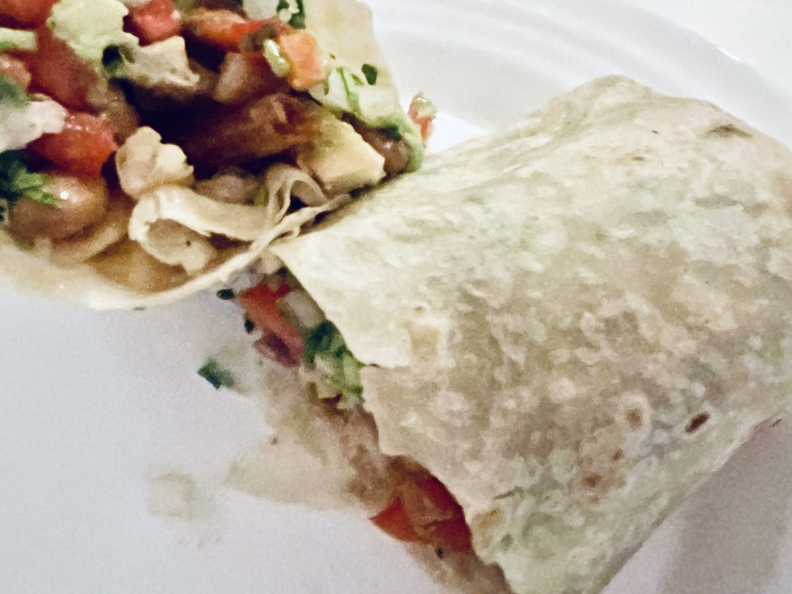

Burritos de frijoles negros, quinoa, edamame y champiñones

🖨️ Descargar receta en PDF · A4👁️ Más de Envueltos y bocados
Ingredientes
- 1 lata de frijoles negros guisados (410 g, con salsa)
Mi producto: GUSTO by P.A.N. → - 50 g de quinoa en seco
- 80-100 g de edamame desgranado
- 100 g de champiñones
- 1 aguacate mediano
- 2 tortillas grandes de trigo (unos 30 cm)
- 1 cdta. de aceite de oliva virgen extra
- 1-2 cdtas. de zumo de lima
- Comino molido (opcional, después de probar)
- 2 cdas. de pico de gallo (opcional, escurrido)
Preparación
Enjuágala en un colador fino y cuécela siguiendo la proporción de agua y el tiempo del envase. Deja reposar tapada unos minutos y suelta los granos con un tenedor. Mientras se cocina, prepara el edamame y los champiñones.
Cocina el edamame según el envase y escúrrelo bien. La cantidad indicada corresponde a los granos, sin vainas.
Limpia los champiñones con un paño húmedo; si tienen tierra adherida, enjuágalos brevemente y sécalos bien, sin remojarlos. Córtalos en láminas o trozos pequeños. Saltéalos con la cucharadita de aceite a fuego medio-alto, hasta que pierdan el agua y empiecen a dorarse. Si ya están cocinados, añádelos cuando los frijoles hayan espesado y omite el aceite del salteado.
Vierte la lata completa en la misma sartén, sin escurrir ni enjuagar. Cocina a fuego medio-bajo, destapado y removiendo, hasta que la salsa quede espesa. Ya llevan cebolla, pimientos y especias: no añadimos otro sofrito. Si usas champiñones ya cocinados, incorpóralos ahora y caliéntalos bien.
Añade el edamame y la quinoa cocida. Mezcla y calienta brevemente. Apaga el fuego, añade la lima y prueba. Pon una pizca de comino solo si te apetece reforzar ese sabor. No añadas sal de entrada.
Calienta ligeramente las tortillas para que sean flexibles. Reparte el relleno formando una franja en el centro y dejando margen alrededor. Añade el aguacate en dados y el pico de gallo escurrido, si lo usas. Dobla ambos laterales hacia dentro. Lleva el borde más cercano por encima del relleno y recógelo suavemente hacia ti para compactarlo. Sigue enrollando con los laterales metidos. Si cuesta cerrarlos, reparte entre más tortillas o sirve el relleno sobrante al lado.
Coloca los burritos en una sartén antiadherente sin aceite, primero con el cierre hacia abajo. Dora a fuego medio hasta que mantengan la forma y estén ligeramente tostados.
Claves
Relleno espeso, aguacate al montar y tortillas sin sobrecargar. Sin sal añadida de entrada.